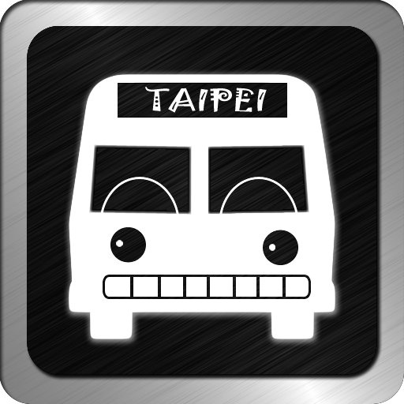

2011-07-01
是否曾經眼睜睜地看著公車從眼前開走，心中嘟嚷錯過這班公車，不知道下班還得等多久？是否愈是要搭乘的公車，愈是讓你有種等到天荒地老的感覺？枯等，著實叫人難耐…...所以，這款0.99美元軟體-- Speed Bus/大台北極速公車，在Apple Store賣的火紅，穩居公車類排行榜的「熱搜冠軍」。
「公車進站0分鐘」--Speed Bus事件
這個應用軟體設計便於使用的UI介面，透過程式直接耙梳台北市政府的公車動態系統內的資料，除了提供用戶最即時的公車到站訊息，客制化的[我的最愛]功能，也讓許多使用者傾心，一試成主顧。因此，許多人撇開現成的免費版軟體不用，願意多負擔些許費用，以圖個便利。而這個軟體的實用、親民的口碑，也為軟體作者帶來不可小覷的實質商業收益。
但，最近卻因為無預警的當機失靈，惹的用戶觀感不佳，罵聲連連，更有部份使用者發出怒吼，要作者「踹共」，還因而上了新聞版面。根據記者瞭解，真正失靈的原因，原來是軟體作者「非法」使用公車動態資訊，遭抓包而切斷系統。
北市府公運處科長黃惠如：「他是沒有來合法跟我們申請『資訊介接』，所以我們把整個資訊端切斷，北市府決定他無法銜接到我們的公車動態系統。」
這個事件，網友持正反意見有一小串論戰。爭執的焦點不外乎是退費、不值的情緒發洩，或是對錯各執立場的表象爭辯。截至目前，似乎已經告一段落，而軟體作者也以理性的態度來進行相關的補救處理。然而，這個看似簡單的消費糾紛，其實隱藏著政府資訊公開、取得與再利用的政策層次省思。
欠缺整體規劃
政府資訊再利用的國際趨勢，台灣已有些政府部門(的人員)開始著眼思考與重視。不過，似乎尚欠缺整體的規劃，與單位內部的共識凝聚。以台北市公共運輸處為例，竟於一個月內，對外做出截然不同的兩樣態度。
「…（市政府交通局的回應）其實也不知道為什麼原本會這樣訂，但是最近也有發現這個問題，將會在最近改正這個條文；意思就是說，不能夠把API呼叫出來的Raw Data拿去賣，但是可以加值（比如說，開發App使其介面使用體驗更棒）就可以收費。」（〈台北市交通局相關資料開放座談會心得〉（2011.5.12））
「…北市府公運處科長黃惠如：「他是沒有來合法跟我們申請『資訊介接』，所以我們把整個資訊端切斷，北市府決定他無法銜接到我們的公車動態系統。」（〈獨家〉「公車進站0分鐘」 非法APP遭斷源 （2011.6.12））
除了呈現出紊亂的政策思維，讓民眾無所適從之外；散落一地的資訊，也讓利用人在尋求合法依歸時，倍感艱辛。筆者實際查訪此事件的主管機關台北市公共運輸處網站，無法找到關於資訊「介接」的相關規定；而透過Google搜尋找到的法規資料，原來放置於交通部運輸研究所-交通服務E通網之下。
開啟此份申請介接臺北市即時交通資訊作業說明，在注意事項中表示：「申請單位針對交通資訊之內容或於加值處理後不得對外收費」，根本欠缺民間加值誘因。而看完層層的規定，在投身加值之初，似乎就足以打消申請念頭。
國家層次的策略思考
政府資訊涉及單位層面廣泛，也具有資訊產業發展促進，與填補政府財政收入的價值。因此，政府資訊取得與再利用的規劃，理應提升到國家政策層次的策略考量，由國家主導加以整合規劃，才不會出現前述的兩樣情。而如同網友ilya所提到：
「政府受限於它的資源分配方式、它的業務執行者的資格限制，制式化的遊戲規則，沒有辦法吸引到具有創新能力的創作者與彈性的作法；因此無法跟這樣的中間人競爭。但是它可以藉由訂定具有開放原則的競爭方式，鼓勵中間人彼此公平競爭，最終帶來政府公共資訊服務的效能與效率的最佳化。信任是很困難的事情。政府應該鼓勵中間人更積極地維繫良好的信任關係。而不是摧毀它們。」
政府人力資源有限，而且也不應該與民爭利，透過訂定清楚、公平、透明、合理的遊戲規則，才能讓民間業者多元的創意能量有所發揮。而為了讓政府資訊有效地在數位環境下利用、流通，並且降低流通時的成本，納入與資訊時代流通本質呼應的公眾授權概念是相當重要的環節。目前國際上許多國家也都將之納入政策思考，以降低政府行政成本，並讓利用人易於瞭解與遵從。
公眾並非天生就知道如何消化吸收政府資料，這些資料是需要透過更多的加值應用者投身加入創意轉化後，才能重現其豐富、多元的面貌。政府手邊的資訊，如果能有效的釋出再利用，將讓生活更加便捷。
備註：
交通服務E通網連結失效